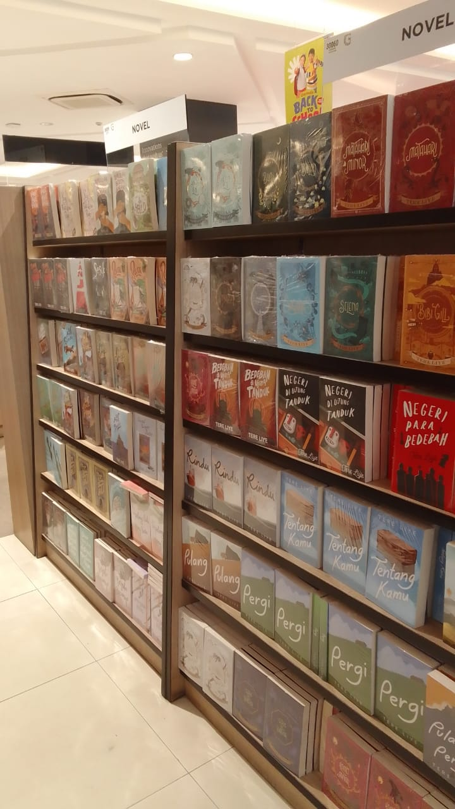
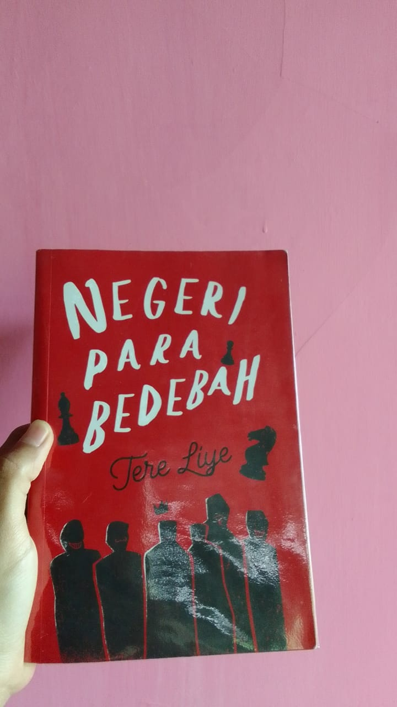
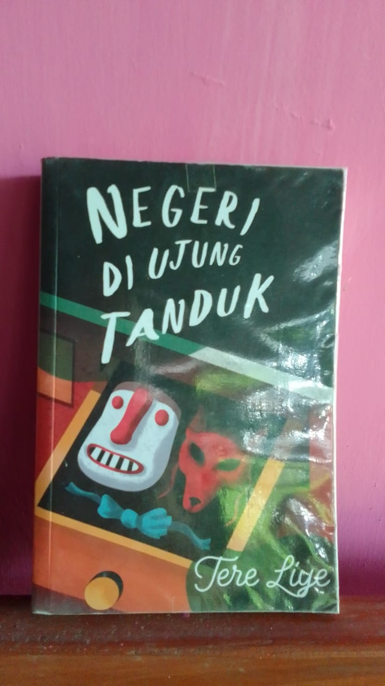
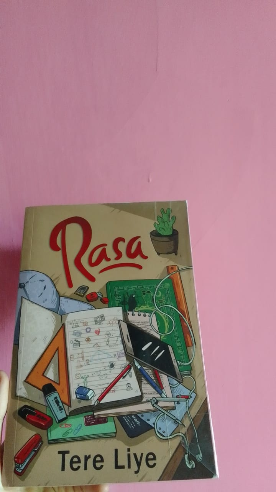
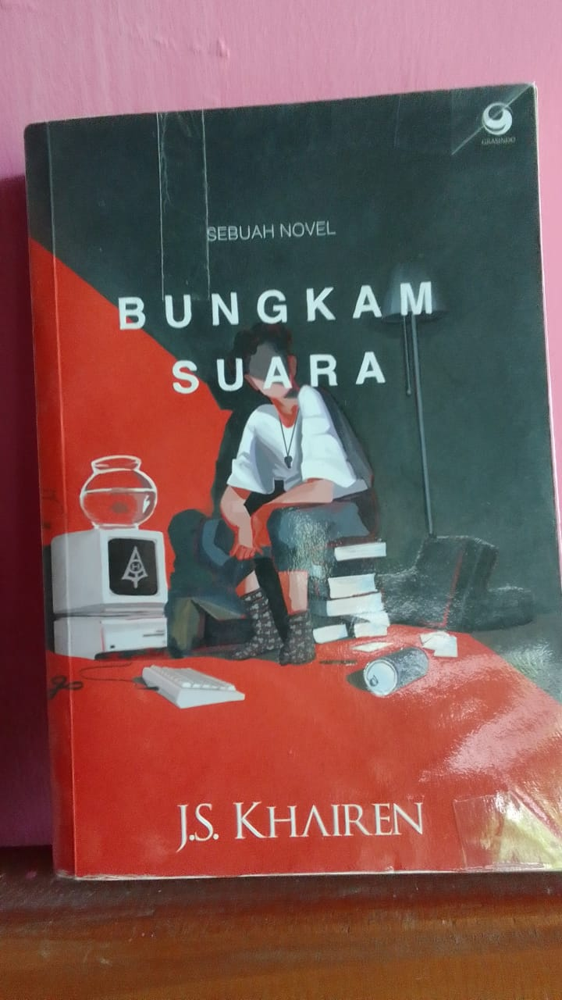
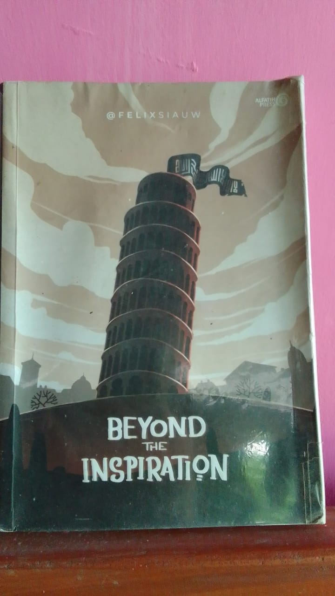
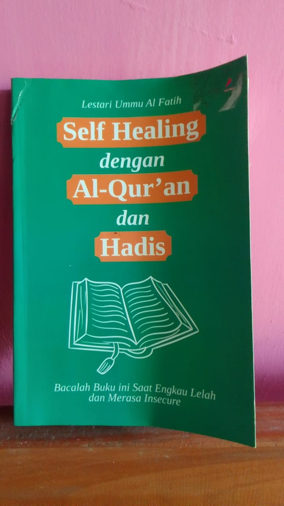

Selamat datang di Galeri Buku! Website ini berisi koleksi buku-buku,
baik fiksi maupun non-fiksi, yang saya kumpulkan dengan penuh semangat.
Membaca buku bukan hanya membuka wawasan, tetapi juga memperkaya pengetahuan
dan membawa kita menjelajahi dunia melalui halaman-halaman yang penuh inspirasi.
Mari berbagi semangat membaca dan menemukan makna menarik dari setiap cerita,
serta menumbuhkan cinta terhadap ilmu dan kisah yang mengubah cara pandang kita.
Book

Pepatah bijak mengatakan bahwa buku adalah jendela ilmu,
membuka cakrawala pengetahuan dan memperluas cara pandang kita terhadap dunia.
Di Galeri Buku ini, saya telah mengumpulkan beberapa koleksi buku yang telah saya baca,
baik fiksi maupun non-fiksi, yang menawarkan kisah inspiratif dan wawasan mendalam.
Mari temukan buku-buku yang bukan hanya akan memperluas wawasan,
tetapi juga mengajak Anda menjelajahi dunia, memahami berbagai perspektif,
dan menemukan makna baru dalam setiap halaman yang dibaca.
Koleksi Fiksi
Fiksi membawa kita ke dunia imajinasi tanpa batas. Berikut adalah beberapa buku yang telah saya baca:
Negeri Para Bedebah

Negeri di Ujung Tanduk

Rasa

Bungkam Suara

Koleksi Non-Fiksi
Non-fiksi mengajak kita menjelajahi dunia realitas yang kaya akan fakta,
wawasan, dan pengalaman nyata, menghadirkan perspektif baru yang dapat
memperdalam pemahaman kita tentang kehidupan, sejarah, dan berbagai fenomena di sekitar kita.
Berikut beberapa buku non-fiksi yang telah saya baca:
Beyond The Inspiration

Self Healing Dengan Al-Qur'an dan Hadits

About
Ketertarikan saya terhadap buku bermula dari waktu yang dihabiskan di perpustakaan,
menyusuri rak demi rak penuh cerita dan pengetahuan. Saat itu, meminjam buku
adalah satu-satunya cara saya menjelajahi dunia literasi.
Seiring waktu, saya berhasil mewujudkan impian untuk memiliki koleksi buku pribadi meski baru beberapa buku.
Saya percaya bahwa membaca adalah pintu gerbang menuju pengetahuan, dan dengan setiap halaman yang
dibaca, dunia menjadi lebih dekat dan pemahaman menjadi lebih luas. Mari bersama-sama
menjelajahi keajaiban buku dan menemukan makna di balik setiap cerita.